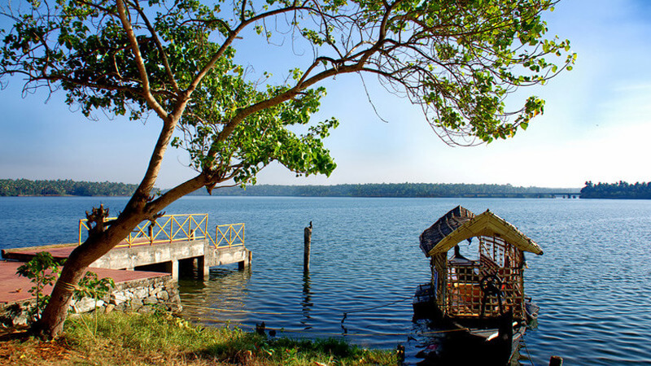
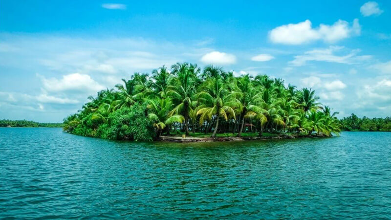

1. Jatayu’s Earth Centre
Spread across 65 acres of land, Jatayu Earth's Centre is a rock-themed park built to promote mythology and adventure. The world’s largest bird sculpture is the main attraction at Jatayupara Nature Park and is one among the several Kollam famous places. It has a 6D theatre, a digital audio-visual room, cable car and the Siddha Cave Healing Centre. The virtual reality museum here tells the story of Jatayu to visitors. It is also home to umpteen adventure activities including paintball, laser tag, archery, bouldering, rock climbing, air-rifle shooting, zip lining, trekking, rappelling, valley crossing, etc.
Timings: 9.30 am to 5.30 pm

2. Thangassery Lighthouse
Looking for the best tourist places in Kollam? The Thangassery Lighthouse, also known as the Tangasseri Light House, boasts of being the second tallest on the entire coast of Kerala and is thus even one of the most visited lighthouses in the state on this account. The tower has a total height of 41 metres, or 135 feet, and has been operational since the year 1902.The majestic tower is clearly visible and distinct, with its painted red and white oblique bands, and looks pretty indeed in all its glory and majesty.
Timings: 10:00 AM - 1:00 PM & 2:00 PM - 6:00 PM , Closed on Monday

3. Ashtamudi Lake
The incredible beauty of Kerala, Ashtamudi Lake, it’s name has been derived from two words 'Ashta' meaning eight and 'Mudi' meaning branch, thereby stating the fact that lake has eight branches. It’s the second largest lake in Kerala. Thick coconut groves and palm trees can be seen all along the banks of the lake. The banks of the lake are also famous for the Chinese fishing nets. Backwater cruises are also available in the lake, between Kollam and Alappuzha. The boat cruise to Munroe Islands is a wonderful experience. There are many resorts along the lake that offer variety of water sports

4. Paravur Lake
Paravur Lake or better known as Paravur Kayal is one of the popular lakes in Kollam. The glittering waters are a visual treat to the eyes. It is a small lake but an ideal spot for locals to come out and enjoy a day outing amidst the beauty of nature. The mangroves standing along both sides of the lake intensifies its beauty, making it more attractive. Another real fascination in the region of Paravur Lake is the Priyadarshini watercraft club. Swimming and surfing are the most popular activities here followed by fishing that requires permission from the local authorities. Apart from the waters, the nearby Puttingal Temple and Puthenkulam Elephant Village are the other attractions here.

5. Kakkathuruthu
The Kakkathuruthu Island in Vembanad Lake, Alleppey is a small magnificent island popularly known as the island of crows. It is a heaven for bird watchers. The coconut trees, paddy fields, toddy tapping, fish farming, coir making, and traditional Kerala food like Appam, puttu, crab roast, shrimp fry, duck, pork dishes with fresh catch from the backwaters...there are numerous aspects which make Kakkathuruthu special. Tourists also enjoy the view of the setting sun and watching the sky hues. The sole place in Kerala listed in Nat Geo's magazine for relishing the time of dusk.
Things to do - Broom making, Boating, Chinese net, Shinkari melam, Catnet fishing, Clam meat processing.